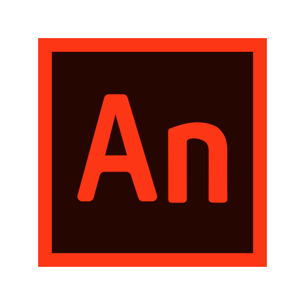
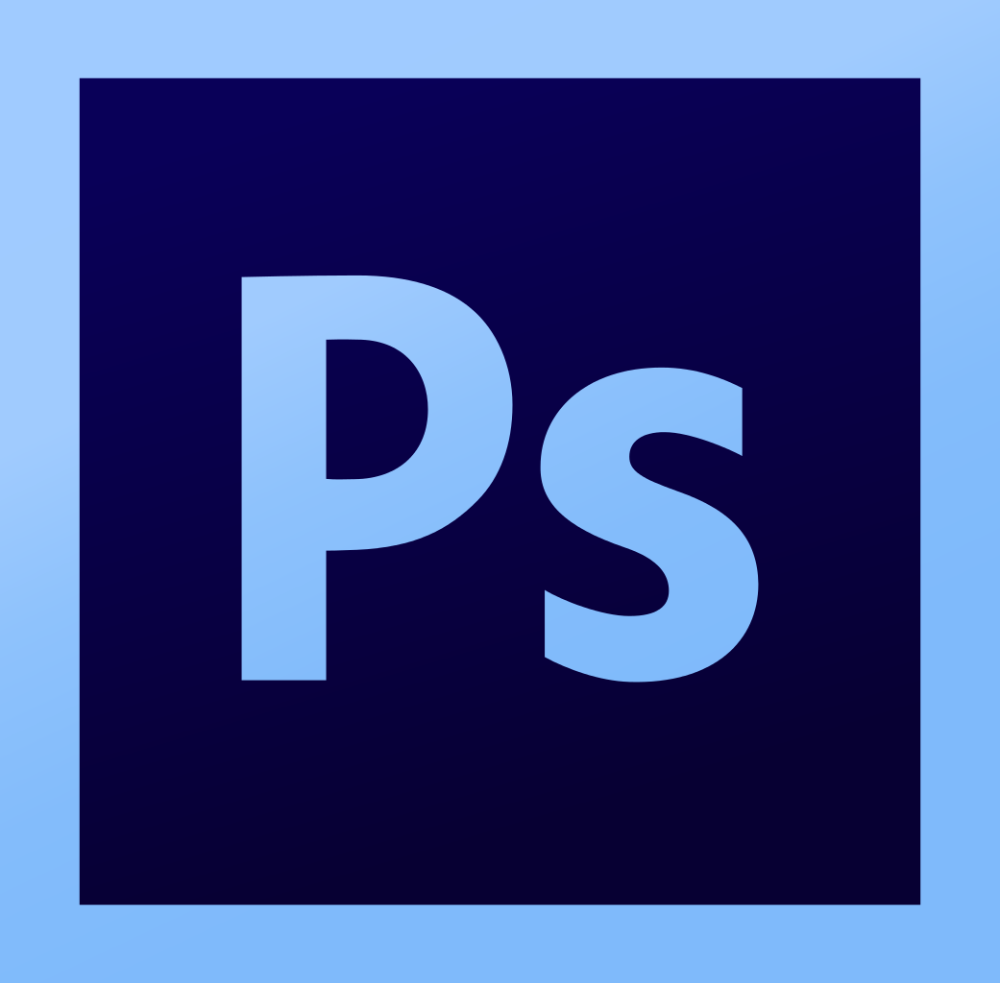

Sobre mim
Olá! Me chamo
John Lennon Fernandes de
Andrade. Alguns
dos meus interesses preferidos
são o
Design UI/UX,
ilustração digital e
animação 2D. Também tenho interesse pelo desenvolvimento front-end.
Desde os 18 anos criei vários
protótipos que ajudaram a
desenvolver tanto as minhas habilidades em
cada uma dessas áreas, como também o conhecimento necessário para integrá-las.
Se você estiver
curioso, confira alguns dos
meus projetos abaixo ou clicando nos botões a seguir:
Tecnologias

